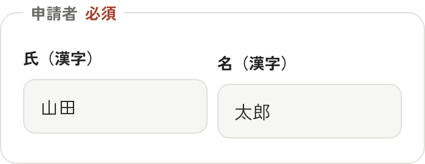
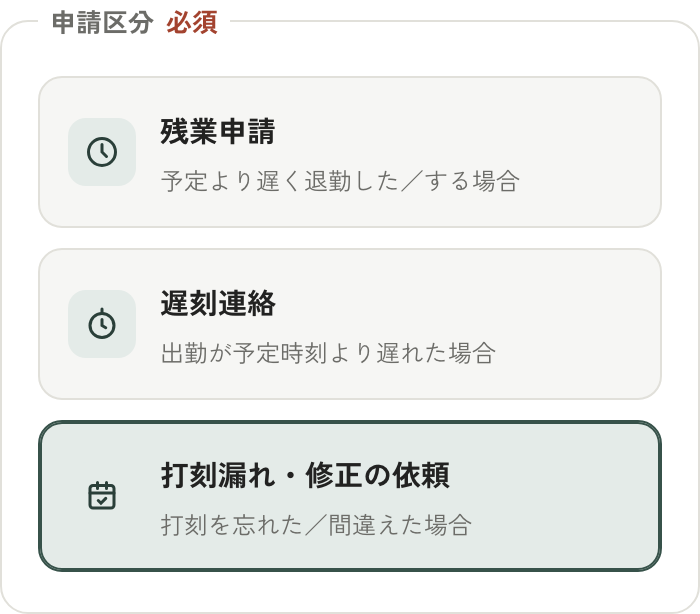
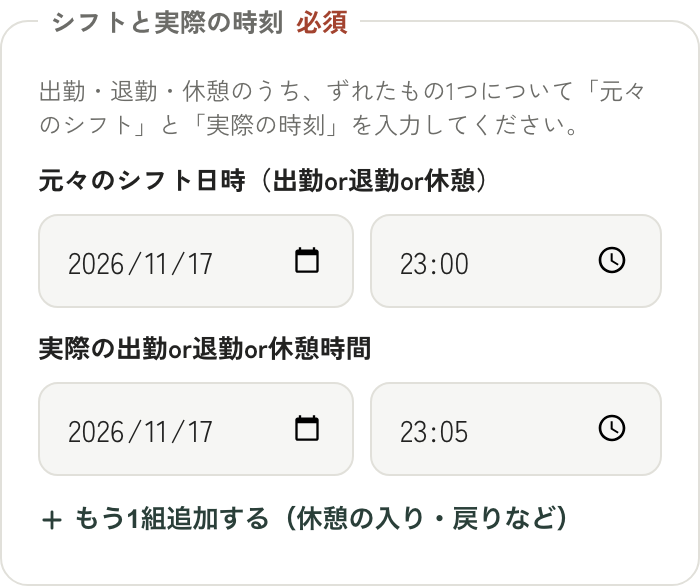
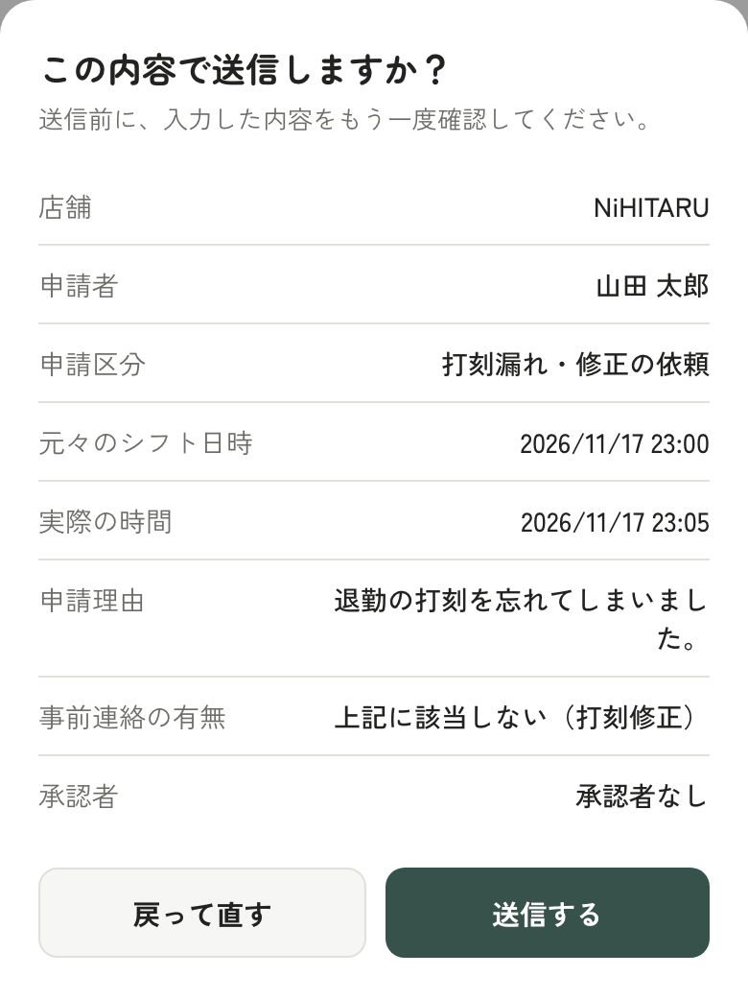

こんなときは申請してください
打刻がシフトから下の時間以上ずれたとき、打刻を忘れた・間違えたときは、できるだけその日のうちに申請してください。休憩の打刻がずれたときも同じです。
月末までに申請がない場合、残業や早出の分は打刻の時間ではなく、シフトの時間で計算します（遅刻は、申請がなくても打刻の時間で扱います）。
サウナ（NiHITARU）
| 出勤 | 退勤 | |
| 日直担当 | 開始10分前より早い | 終了20分後より遅い |
| 日直担当以外 | 開始5分前より早い | 終了10分後より遅い |
例：シフト17:00〜23:00（日直以外）→ 16:55より前に出勤、23:10より後に退勤したら申請
Play（NiHITARU Play）
シフト開始より遅れて出勤したとき（遅刻）と、出勤・退勤の打刻を忘れたときに申請してください。
申請のしかた
-
「申請する」を押す
このページの「申請する」ボタンを押すと、LINEの中で申請画面が開きます。はじめて開くときだけ、LINEへのアクセスの許可を求められるので「許可する」を押してください。
-
店舗とお名前を入れる
お名前は「氏」と「名」に分けて、漢字で入力してください。

入力例 -
申請区分を選ぶ
残業したときは「残業申請」、遅れて出勤したときは「遅刻連絡」、打刻を忘れた・間違えたときは「打刻漏れ・修正の依頼」を選びます。

-
元々のシフトと、実際の時刻を入れる
ずれた打刻1つについて、「元々のシフトの時刻」と「実際に出勤・退勤・休憩した時刻」を入れます。休憩の入りと戻りなど2つあるときは「もう1組追加する」を押してください。

例：23:00退勤のシフトで、23:05に退勤した（打刻を忘れた）場合 -
理由と承認者を入れて、内容を確認して送信
理由を入れて承認者を選んだら「内容を確認して送信」を押します。確認画面で間違いがなければ「送信する」を押してください。

-
LINEに控えが届きます
送信すると、このLINEに申請内容の控えが届きます。担当者が確認したかどうかは「自分の申請履歴」から見られます。
申請した内容を間違えたときや、わからないことがあるときは、このLINEのトークでそのまま連絡してください。